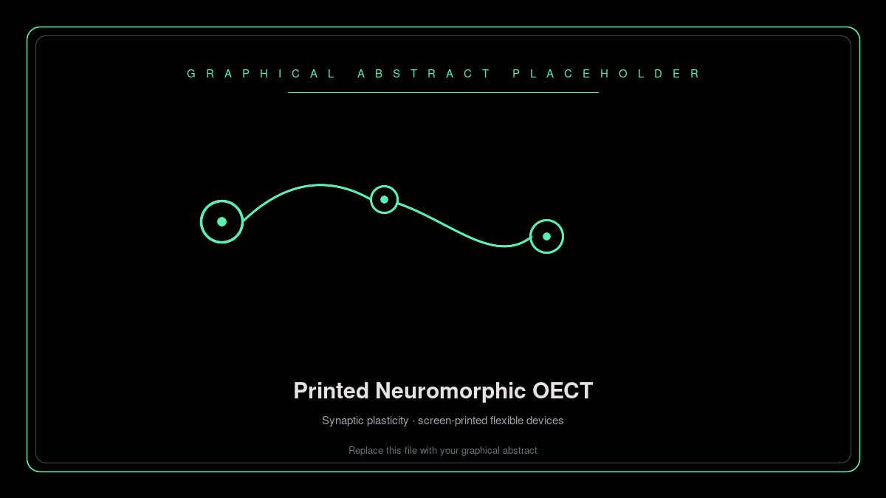

RESEARCH PILLAR 01
Neuromorphic Computing & Bio-Realistic Synaptic Transistors
Conventional von Neumann digital hardware suffers severe energy bottlenecks when running deep neural networks. We design and fabricate fully screen-printed organic electrochemical transistors (OECTs) that emulate biological synapses with ultra-low operating energy (~24 nJ).
- Biological Memory Curves: Successful hardware replication of the psychological Ebbinghaus forgetting curve.
- Plasticity Rules: Spike-Timing-Dependent Plasticity (STDP) and Paired-Pulse Facilitation (PPF).
- Integrated Logic: Demonstrating concurrent multi-input OR logic inside the conductive channel.
OECT Transistors
Hebbian Learning
Edge AI Hardware
Applied Materials Today 2026